Limits & Continuity
Definition
Limits describe how the outputs of a function f behave as x approaches a value of C. The value that the function approaches is denoted by the letter L.
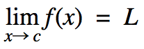
Properties of Limits
These rules allow you to analytically determine the limits of both polynomial and rational functions. By determining the limits of individual parts of a function and then applying these rules, the limit of complicated functions can be found.
Given 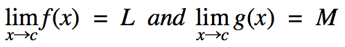
Sum Rule
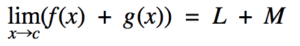
Difference Rule
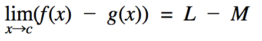
Product Rule
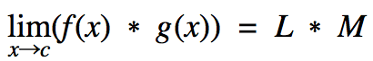
Quotient Rule
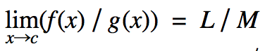
Power Rule
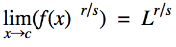
Polynomial Rule
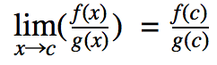
This rule is arrived at when using the 6 basic properties, as shown below the final limit is exactly the same as simply substituting the value x approaches.
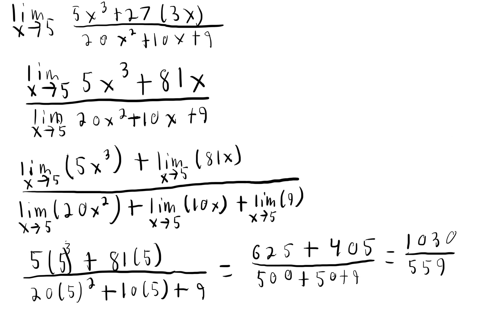
Finding Limits Graphically & Numerically
Right and Left Hand Limits
Application - Continuity
Limits can be used to determine whether a function has continuity at a point. If a limit fails to exist at point C, C is a point of discontinuity and the entire function is considered discontinuous. Continuity at a point can be tested for interior points by evaluating the right and left hand limits as x → C.
If the limit fails to exist from either side, or the right and left handed limits are not equal the limit at that point does not exist.
To find if a function is continuous at endpoints, the right hand limit, 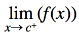, must exist for the function to be continuous at a left endpoint. The left hand limit, 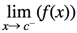, must exist for the function to be continuous at a right endpoint. A function is continuous if it is continuous at every point in its domain.
A discontinous function

A continous function
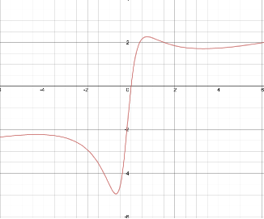
Average Rates of Change and Secants Lines
The average rate of change of a function over an interval is the amount of change divided by the length of the interval.
This “average rate of change” between point ‘a’ and ‘b’ is equivalent to the slope of the secant line which passes through points ‘a’ and ‘b’.
By combining this concept with limits it is possible to evaluate the instantaneous rate of change of a function at a given point.
To find this make the two points on the secant line P and Q.Make point P the value of x at which you want to determine the instantaneous speed. Then make the second point an arbitrary point ‘Q’ and then find the limiting value of Q as it approaches ‘P’.
This gives you the instantaneous rate of change at point ‘P’.
This instantaneous rate of change is equivalent to the slope of the tangent line that passes through point ‘P’.
In other words, the slope ‘m’ of the tangent line, at point P(a, f(a)) in function f(x), when x = a, is equal to
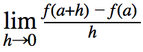
as long as the limit exists at this point.
This can be demonstrated in the viewer below. By making the value of ‘H’ (the blue dot) closer to that of ‘A’ (red dot) the variable ‘m’ approaches the slope of the tangent line at x = a (this is the black line when h is infinitely close to A).
Derivatives
Definition
The derivative of f, denoted as f’, at 'a' is the instantaneous rate of change (slope of tangent line), of a function 'f' when x = a. For this value to exist the limit must exist at the point ‘a’ and the function must be continuous at that point.
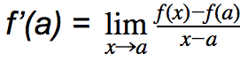
This formula allows the derivative (slope of the tangent line) to be found at any continuous point ‘x’ to be found.
Derivatives & Limits
Derivatives employ many of the same concepts as limits.
A function is considered differentiable on a closed interval [a,b] if it has a derivative at every interior point. Additionally the limits at the endpoints must exist. To test if the limit exists at a right enpoint, 'b', take the righthand limit at that point.
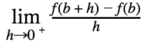
To test if the limit exists at a left endpoint, 'a' take the lefthand limit at that point.
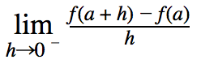
As derivatives are limits, for a derivative to exist at a point the limit must exist, which requires the right and left hand derivatives match at the given point.
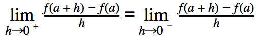
As a result, if a derivative exists a point x = a then the function is continuous at the point x = a. However the converse of this statement is not always true. For example the function |x| is continuous but not differentiable at x = 0.
Derivatives Failing to Exist
Corners
In this case the one sided derivatives, or derivatives from the right and left hand side, will differ. These mainly can occur in absolute value functions and piecewise functions such as f(x) = |X| or in other cases such as sqrt (x2).
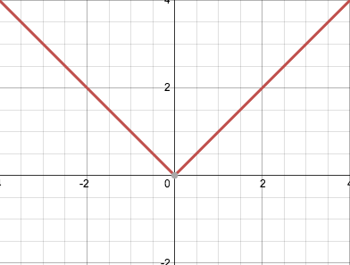
Cusps
The slopes of the secant lines approach infinity from one side and negative infinity from the other. Example 5(x)(2/3).
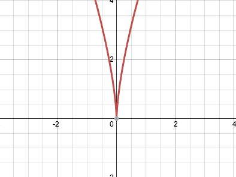
Vertical Tangents
The slopes of the secant lines approach negative or positive infinity from both sides.
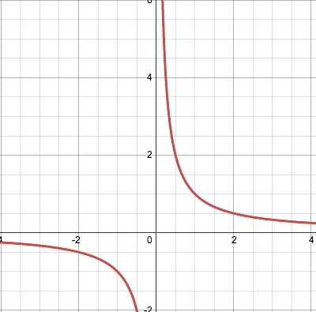
A discontinuity
One or both of the one sided derivatives will fail to exist. Example: floor(x) whenever x = an integer.
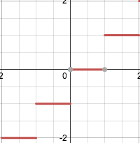
Local Linearity
If a function is differentiable at a point, the graph at that point will appear “locally linear”. A function has local linearity at a point, if when you zoom in on a graph the function appears to become a linear line.
In a differentiable function like x2 this occurs at every point. In non-differentiable functions such as |x|, the graph does not have local linearity at x = 0.
You can see this in the graph below. As you zoom in towards the origin |x| never becomes locally linear but x2 does.
Intermediate Value Theorem for Derivatives
If a function f(x) is differentiable on the interval [a,b], then f’ takes on every value between f’(a) and f’(b). This builds upon the more basic intermediate theorem which states: a function that is continuous on the interval [a,b] takes on every value between f(a) and f(b).
Conclusion
Some text some text some text some text
Finding Derivatives
Properties
Derivatives, similar to limits have a series of properties and rules that can be used to break down the function and determine its derivative.
Constant Functions
The derivative, f’(x), of a constant function such as f(x) = 5 is always zero.
Power Rule
If n is any rational number, either positive or negative, then the derivative of xn = nxn-1
Constant Multiple Rule
The derivative of (c * u) = (c * u’). This means the derivative of any variable with a coefficent is simply the value of the coefficent.
Sum and Difference rule
If u and v are both differentiable functions of x, the and they are added or subtracted the derivative will be equivalent to the sum or difference of the individual derivatives.
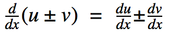
Multiplying differentiable functions (Product Rule)
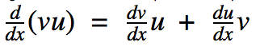
This means if two differentiable functions are multiplied the resulting derivative will be equivalent to the derivative of v multiplied by u, plus the derivative of u multiplied by v.
Proof of Product Rule
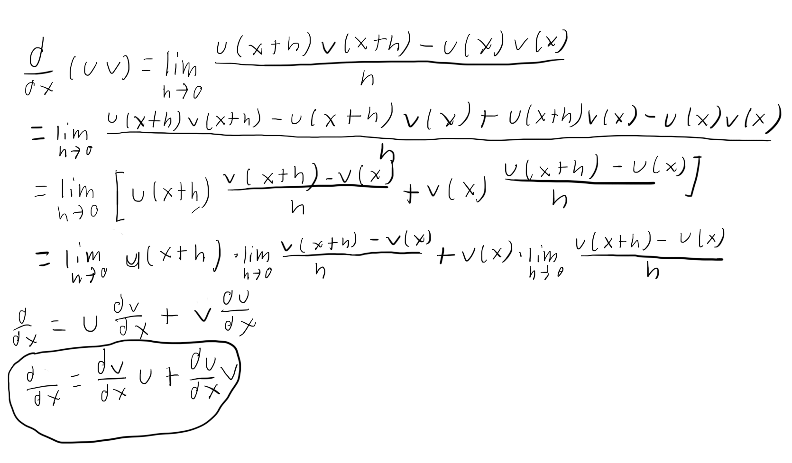
When solving for these equations it is helpful to break down the equation and determine the values of u, u’, v and v’.
Dividing Differentiable functions (Quotient Rule)
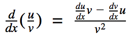
This means if the differentiable function u is divided by the differentiable function v at any point where v ≠ 0, the derivative is equivalent to: ((the derivative of u multiplied by v) minus (the derivative of v multiplied by u)) all divided by v2
As with the product rule it is useful to identify and find the values of u, u’, v, and v’.
Finding Second, Third, Fourth, Fifth, Six, Seventh, Eighth, .... Derivatives
These same rules can be applied to find the second and higher order derivatives of a function. The notation for finding the second and third derivatives is y’’ and y’’’ respectively. For any higher order derivative it is simply denoted by y(n).
To find a higher order derivative you simply take the derivative of the first function and then to find a second derivative take the derivative of the first derivative. Continue this process as many times as necessary.
Derivatives of Basic Trig Functions
| Function |
Derivative |
| sin(x) |
cos(x) |
| cos(x) |
-sin(x) |
| tan(x) |
sec2(x) |
| cot(x) |
-csc2(x) |
| csc(x) |
-csc(x) * cot(x) |
sec(x) |
sec(x) * tan(x) |
Sine Functions
The derivative of the function sin(x) is cos(x). This can be seen graphically by graphing the derivative, nDeriv(sin(x)), and the graph cos(x). These two functions will match exactly at every point.
Cosine Functions
The derivative of the function cos(x) is - sin(x). This can also be seen in the graph below. The graph of the derivative of cos(x) is equivalent to the graph of -sin(x).
Other Trig Functions
Knowing the derivatives of sine and cosine functions allow the other basic trigonometric functions to be found as tan, cot, sec, and csc can all be defined in terms of sin and cos.
Chain Rule
The chain rule is key for evaluating the derivatives of composite functions. While not always visible the chain rule is used whenever evaluating the derivative of any function.
Definition
The chain rule states that if the function f is differentiable at g(x) and the function g is differentiable at x, then f(g(x)) is differentiable at x.
Additionally it states that: the derivative of f(g(x)) is equivalent to the derivative of the outside function, f’ ,at the value of the inside function g(x), multiplied by the derivative of the inside g’.
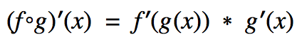
Exponential and Log Functions
Other methods of taking derivatives
Graphing
Numerical
Tables
Implicit Differentiation
Background
The chain rule is critical when solving implicitly defined functions.
Implicit differentiation allows the derivative (slope of tangent line) to be found in functions where the x and y variables are mixed together and the previous methods for finding derivatives do not work.
The key is to treat the variable y as a differentiable function of x and then differentiate both sides of the equation with respect to x. This means 3y = 2xy is now really as 3y(x) = 2(x)(y(x)), and that y’ = (dy/dx).
This is useful for various real life situations in addition to finding the instantaneous rate of change on shapes such as a circle whose formula is x2 + y2 = 25 .
Implicit Differentiation Process
First: Differentiate both sides of the equation with respect to x.
Second: Gather all the terms with (dy/dx)onto one side of the equation
Third: Factor out (dy/dx)
Fourth: Isolate / Solve For (dy/dx)
Applications
Implicit differentiation is especially useful when finding equations of lines that are tangent to a point, specifically in curves and ellipses.
example
Basic Applications of Derivatives
Position, Velocity, and Acceleration
Derivatives can be used in the real world to find the position, velocity, and acceleration of objects at any given time. Whenever taking the derivative in these situations it is key to take them with respect to time. Those variables are related in the following ways.
(Instantaneous) Velocity
(Instantaneous) Velocity is the derivative of the position function s = f(t) with respect to t.
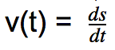
This is because velocity is the change in position over a certain time, resultingly when taking the derivative of the position function you get the instantaneous velocity (change in position) at time t.
Speed
Speed and velocity while closely related are not the same. Velocity is a vector, while speed is a magnitude. This means that Velocity has a direction (usually indicated by a + or - sign for basic equations) while speed is only a value. Therefore speed since it is always positive is the absolute value of velocity.
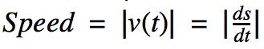
Acceleration
Acceleration is the derivative of the velocity function v(t) and the second derivative of the position function with respect to t.
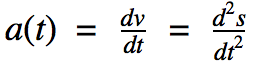
This is because acceleration is instantaneous rate of change in velocity.
Uses of higher order derivatives
By taking higher order derivatives you can continue to find the instantaneous rates of change of objects. The derivative of acceleration yields the jerk of an object. Beyond that the derivatives are referred to as: snap, crackle, and pop.
Application to Particle Motion
Analytical
Graphical